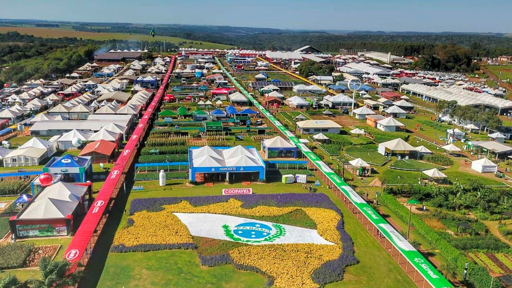
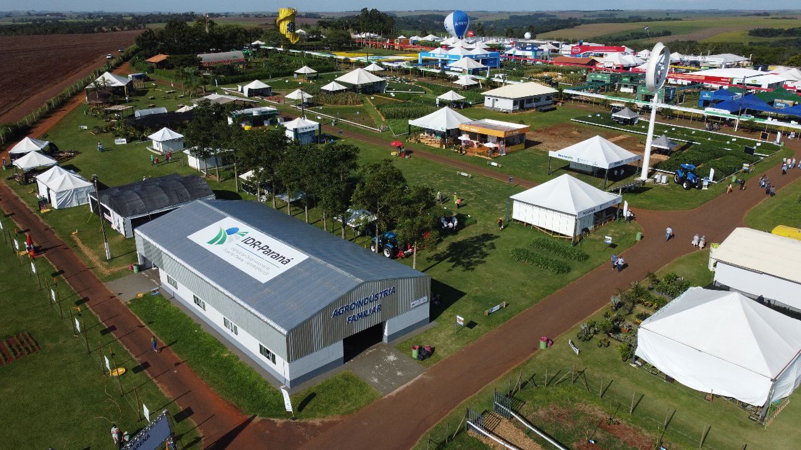
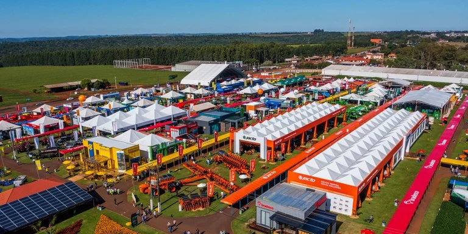

Sobre o Evento
O Show Rural Coopavel é um dos maiores e mais importantes eventos do agronegócio mundial. Realizado anualmente em Cascavel, no oeste do Paraná, a feira é um ponto de encontro para produtores rurais, pesquisadores e empresas que buscam as mais recentes inovações e tecnologias para o campo. É um verdadeiro celeiro de conhecimento e oportunidades para o setor agrícola.
Destaques e Atrações
- Exposição de máquinas e equipamentos agrícolas de última geração
- Lançamento de novas cultivares e tecnologias de sementes
- Palestras e workshops sobre tendências e inovações no agronegócio
- Condições especiais de negócios e financiamento para produtores
- Demonstrações de técnicas e tecnologias para pecuária
- Espaço para startups e inovações disruptivas no campo
Participação e Acesso
O Show Rural Coopavel é um evento gratuito e aberto ao público. Recomenda-se planejar a visita com antecedência e consultar o site oficial para a programação completa e as datas exatas de cada edição.
Galeria


